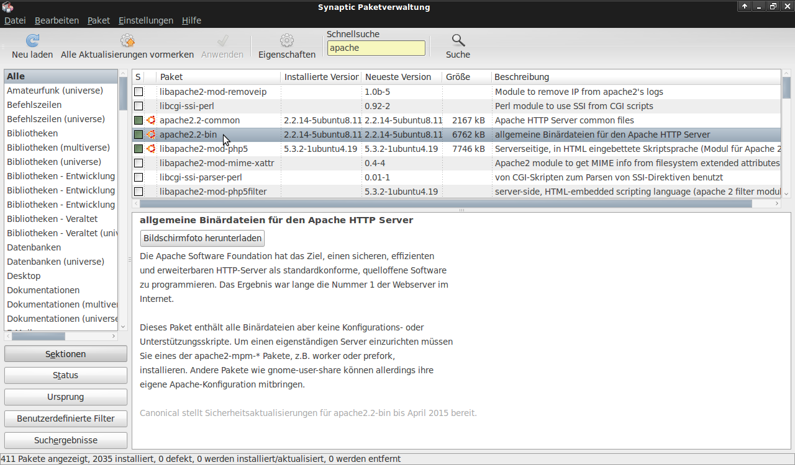
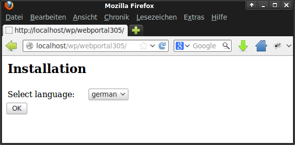
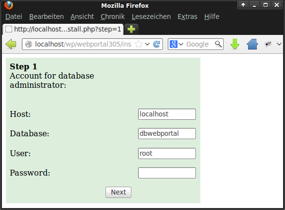
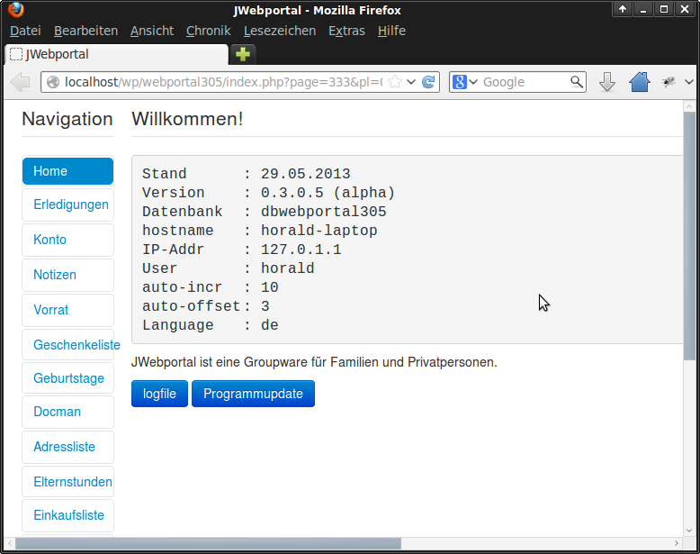
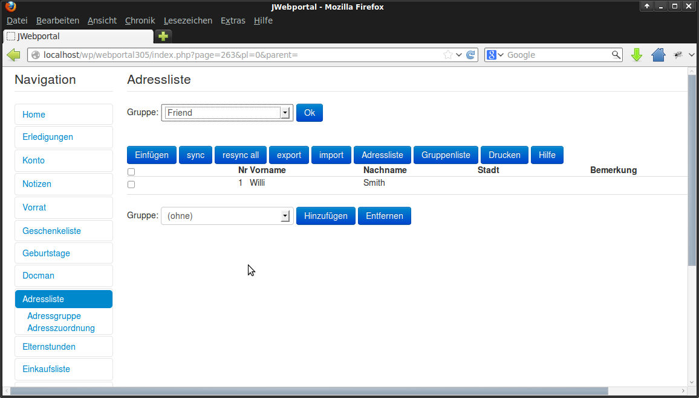
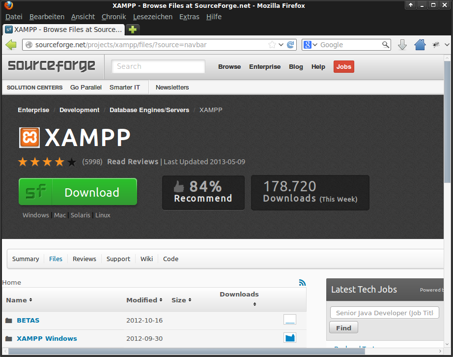

Voraussetzung für die Installation von
Installation von Jwebportal
Jwebportal
JWebportal
Zuerst muss die Archivdatei (z.B. webportal-alpha-
Unter Linux:
3.0.5.zip) in das htdocs-Verzeichnis des
Webservers entpackt werden. Danach kann über
Einrichten eines Webservers (z.B. Apache),
den Webserver die Installation gestartet werden.
PHP und MySQL. Von der Installation mit
Xampp für Linux würde ich abraten, da viele
Die Installation von Jwebportal ist benutzergeführt.
Pakete bei den meisten Linux Distributionen
Zuerst wird die Sprache abgefragt:
schon vorinstalliert sind. Am einfachsten ist es
in die Paketverwaltung zu gehen und nach den
Komponenten Apache, PHP und MySQL zu
suchen und dann die fehlenden Pakete
nachzuinstallieren.
Nach der Begrüßungsmeldung werden dann die
Datenbankparameter abgefragt:
http://sourceforge.net/projects/jwphorald/
oder
htt://www.horald.de/jwphorald
Danach wird das Anlegen der Datenbank bestätigt.
Nachdem die config.php Datei angelegt wurde,
kann das Webportal benutzt werden.
Stand: 2013-06-05 7:16


JWebportal
Voraussetzung für die Installation von
Jwebportal
soll bestimmen Sie selbst. Wir liefern lediglich das
Grundgerüst, welches komfortabel und übersichtlich
Das maßgeschneiderte
Unter Windows:
ist und für jeden ganz einfach persönlich anzupassen
Organisationssystem für den
ist.
Einrichten eines Webservers (z.B. Apache), php
Das Ganze befindet sich noch in der Entwicklung (
und MySQL. Dies kann relativ einfach mit dem
Alltag ist da!
Open Source Projekt) und wir suchen außer
Installationspaket erstellt werden. Hierfür
interessierten Nutzern/ Testern auch engagierte
eignet sich Xampp.
Egal ob Sie Single sind oder Familie und Kinder
Mitentwickler, die ihre Ideen einbringen und mit
(http://www.apachefriends.org/de/xampp.html)
haben, ob sie es privat oder beruflich nutzen
programmieren.
möchten, mit dem Webportal können Sie alle
Bereiche ihres Alltags nach ihren persönlichen
Interesse? Dann schauen Sie doch mal rein unter
Wünschen organisieren und planen. Das Schöne
http://sourceforge.net/projects/jwphorald/
daran ist, dass sie kein starres System erwartet,
sondern dass sie alles selbst nach ihren Wünschen
und Bedürfnissen gestalten können.
Terminkalender, Geburtstage, Geschenke-wünsche
entweder nach Anlässen ( Geburtstage, Weihnachten
etc ) oder Personen aufgerufen und ggf. mit dem
passenden Link versehen machen die Wunschzettel
ihrer Lieben übersichtlich und praktisch zu
handhaben. Gleichzeitig können Sie den Essensplan
für ihre Familie gestalten mit Rezepte-Pool zum
nachschlagen, die täglichen Aufgaben verteilen und
organisieren, ein handliches Adressbuch führen, ihre
Läßt sich auch unter Android
Vorräte und ihre Einkaufsliste genauso verwalten wie
installieren.
ihre Finanzen.
Wir bitten um Ihre Mithilfe!
Das Ganze ist absolut einfach zu benutzen, ohne dass
Mit KSWeb können die benötigten
Sie viel Vorkenntnisse haben müssen und sehr
Laden Sie diese Broschüre runter und geben Sie
Komponenten auf einem Android Gerät
übersichtlich. Per Mausklick können Sie alles
diese an Freunde und Bekannte weiter. Sie
installiert werden:
aufrufen was gerade nötig ist. Sie sparen Zettelkram
finden diese Broschüre als PDF-Datei unter:
und können ganz einfach ordnen und auch
http://sourceforge.net/projects/jwphorald/
(http://www.apachefriends.org/de/xampp.html)
aufräumen. Wie ihr persönliches Webportal aussehen